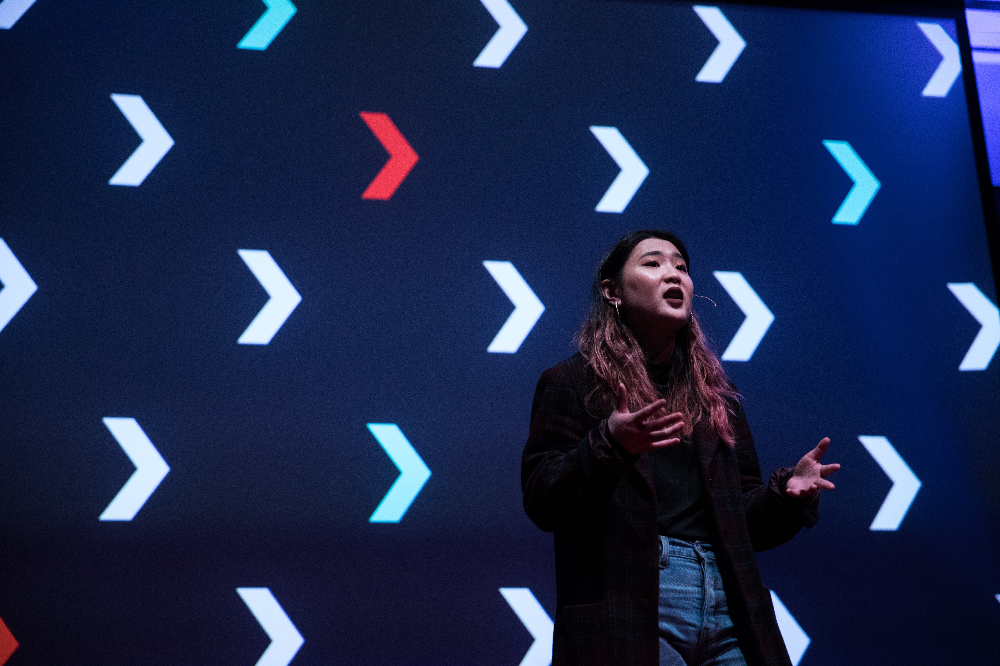
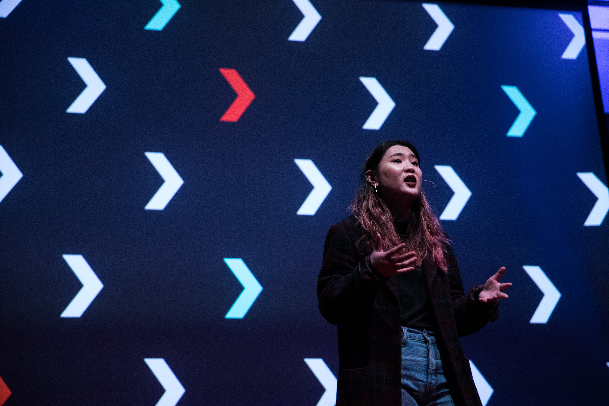

Overview
I lead a small design team responsible for creating a visual identity
and it's assets for the 2019 TEDx event at Emily Carr University of Art
and Design. The identity was based on the event's theme: Greater Than You.
Team
Arjun Menon: Design Lead, Motion Design
Rebecca Lo: Attendee badges
Sophia Cho: Program Guide
Vivian Chen: Website
Cindy Nachareun: Signage + Interactive Installations
Process Managing dreams and reality was a big challenge. With the small team we had and limited time commitment, the amount of graphic assets would have to be limited in order to create a cohesive visual identity. The top most priority was to design and finalize the visual identity guidelines. This was a collaborative process where team members brought in sketches and ideas which we then brought together elements of each perspective in a cohesive identity. We made sure to keep in mind the event theme and vision, and all it's participants. With multiple touchpoints for the event, the design responsibilities split between each team member.
Design Decisions
I initially came into the position as the design lead to help guide a direction
with the theme logo. I proposed a decision to not have another logo (in addition to
the TEDx logo) for the event and rather have the visual assets represent the
theme. This decision took into account how the event attendees would understand
the event's structure and iconography. This was one of many decisions I made as the
design lead in order to make things seamless and clear.
Wins:
Simplifying the design assets, making things cohesive.
Losses:
Not enough collaboration between teams (Communicating more with the
interactive exhibition team and animation short team would have brought
the event together better)
 

Motion Design In order to drive and increase engagement before the event, I had designed motion graphic posts that introduced the speakers and the subject of their talk. These were posted on social media days before the event. The "greater than" symbol grid allowed for a great level of flexibility and playfulness in the various iterations while maintaining the identity contraints.
Takeaways Designing an event visual identity was an overall fun experience. What was challenging for me was learning and applying the role of design lead. With a small team and limited time commitment from everyone, finding ways to collaborate, prioritize, and share design responsiblities was challenging to do in a way that kept the design outcomes clean and cohesive.
Next Project